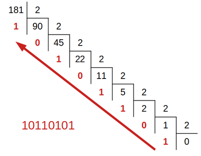

1.1 Écriture d'un entier dans une base⚓︎
Le monde se divise en 10 catégories : ceux qui comprennent le binaire et ceux qui ne le comprennent pas.
1. Le système décimal⚓︎
Depuis la préhistoire, l'Homme a besoin de compter. Sa première idée:

Pas très pratique... Heureusement, il en eut rapidemennt une autre, beaucoup plus efficace: regrouper les bâtons en paquets.

Des paquets de 5 et surtout de 10. Pourquoi 10?
Pour écrire les nombres, regroupés en paquets de 10, il a donc fallu inventer 10 chiffres pour compter les unités (en-dessous du paquet): 0, 1, 2, 3, 4, 5, 6, 7, 8, 9.
Et le nombre 10 ne signifie ni plus ni moins que 1 paquet et 0 unité.
Ensuite, on fait un paquet de paquets, la centaine (100, c'est à dire \(10 \times 10 = 10^2\)), puis un paquet de centaines, le millier (1000, c'est-à-dire \(10\times 10\times10=10^3\)), et ainsi de suite.
Au final, si on écrit le nombre 2021, on sait que c'est:
- 2 mille, c'est-à-dire \(2\times 10^3\) ;
- 0 centaine, c'est-à-dire \(0\times 10^2\) ;
- 2 dizaines, c'est-à-dire \(2\times 10^1\);
- 1 unité, c'est-à-dire \(1\times 10^0\).
Et bien entendu, \(2021 = 2\times 10^3 + 0\times 10^2+ 2\times 10^1 +1\times 10^0\)
La position de chaque chiffre dans l'écriture du nombre correspond à la puissance de 10 par laquelle on le multiplie.
Homer compte
| Octal | Décimal |
|---|---|
| 0 | 0 |
| 1 | 1 |
| 2 | 2 |
| 3 | 3 |
| 4 | 4 |
| 5 | 5 |
| 6 | 6 |
| 7 | 7 |
| 10 | 8 |
| 11 | 9 |
| 12 | 10 |
| 13 | 11 |
| 14 | 12 |
| 15 | 13 |
| 16 | 14 |
| 17 | 15 |
| 20 | 16 |
| 21 | 17 |
| ... | ... |
Un autre exemple, la base octale
Pour Homer Simpson, qui n'a que 8 doigts, il aurait été certainement plus naturel de faire des paquets de 8... et donc de manipuler seulement 8 chiffres : 0, 1, 2, 3, 4, 5, 6 et 7.
C'est le système octal.
Ainsi, «son» 10 signifierait 1 paquet de 8 et 0 unité, soit «notre» 8... Et donc notre 10 (en décimal) s'écrirait 12 (en octal).
Enfin, 2021 (en décimal) s'écrit 3745 en octal puisque :
2. Notion de base⚓︎
Écriture d'un entier en base \(b\)
-
Choisir une base, c'est choisir la «taille» du paquet, et donc le nombre de chiffres dont on aura besoin: en base \(b\), il y a \(b\) chiffres.
-
Dans notre système décimal, la base est \(b=10\).
-
La position de chaque chiffre correspond à la puissance de \(b\) par laquelle on le multiplie.
-
On précisera la base (si différente de 10) en indice en fin du nombre. Par exemple, le nombre \(312_5\) est écrit en base 5.
Exemples
3. Le système binaire (base 2)⚓︎
Le binaire
- Le système binaire est le système de numération de base \(b=2\).
-
Il utilise donc seulement deux chiffres, 0 et 1, appelés bits (contraction de l'anglais binary digit).
-
Il est particulièrement adapté à l'informatique car il permet d'unifier la logique (Vrai/Faux), le calcul et l'électronique (voir vidéo suivante).
-
Un regroupement de 8 bits est appelé un octet.
Vidéo
Conversions
Il est utile de connaître alors les puissances de 2 pour convertir rapidement de l'écriture binaire vers l'écriture décimale.

Par exemple \(10110101_2=128+32+16+4+1=181\).
-
On peut utiliser l'algorithme de soustraction: on soustrait du nombre la plus grande puissance de 2 possible, et on recommence...
-
On utilise l'algorithme de divisions: on effectue les divisions successives du nombre par 2. L'écriture en binaire est donnée par les restes lus de bas en haut.

Les deux algorithmes de soustraction et de divisions fonctionnent également pour la conversion du décimal vers n'importe quelle autre base.
4. Le système hexadécimal (base 16)⚓︎
L'hexadécimal
-
Le système hexadécimal est le système de numération de base \(b=16\).
-
Il utilise donc 16 chiffres : 0, 1, 2, 3, 4, 5, 6, 7, 8, 9, A, B, C, D, E, F.
-
Bien qu'il nécessite plus de chiffres, ce système donne des écritures plus courtes et particulièrement pratique du fait que 16 est une puissance de 2 : la conversion entre les systèmes binaire et hexadécimal se fait sans calcul, uniquement par regroupement de 4 bits.
Couleurs
Le système hexadécimal est en particulier un mode de code informatique des couleurs.
En effet une couleur (codage RGB) est composée de 3 valeurs correspondant aux composantes rouge, verte et bleue, et chacune de ces valeurs est un entier compris entre 0 et 255, c'est-à-dire entre 0 et FF en hexadécimal: on peut les écrire avec seulement deux chiffres.

Par exemple, la couleur rouge ci-contre a pour composantes (178, 26, 15), ce qui donne en hexadécimal : (B2, 1A, 0F), qu'on écrit en général de façon concaténée B21A0F et souvent précédée d'un #.
Convertisseur
Un convertisseur bien utile.
5. Exercices⚓︎
5.1 À la main⚓︎
Exercices
Convertir de la base mentionnée vers la base 10 (système décimal).
Attention, il y a un piège...
- \(131_6\)
- \(420_5\)
- \(1515_8\)
- \(716_4\)
- \(321_4\)
Convertir les écritures décimales vers la base mentionnée.
- 47 en base 5
- 92 en base 4
Convertir du binaire vers le décimal.
- 1010
- 101110
- 10001101
- 11111111
Convertir du décimal vers le binaire.
- 17
- 34
- 68
- 100
- 200
Que remarquez-vous quand on passe de l'écriture binaire d'un nombre à celle de son double?
-
Vérifier la conversion de la couleur rouge donnée en exemple à la section précédente.
-
Convertir les écritures hexadécimales en décimal: 99, D7, 1B8, ABC.
-
Comment s'écrit la couleur blanche en code hexadécimal?
Convertir les écritures décimales en hexadécimal.
- 45
- 72
- 421
Exercice 7
- On regroupe les bits par paquets de 4 (quitte à ajouter des 0 pour compléter).
- On convertit chaque paquet en chiffre hexadécimal.
- On concatène les chiffres
Par exemple, \(11111100101_2 = \underbrace{0111}_{7} \underbrace{1110}_{14=\text{E}_{16}} \underbrace{0101}_{5} = 7\text{E}5_{16}\)
On fait la même chose dans l'autre sens.
- Convertir \(101101_2\) puis \(10011011111_2\) en base 16.
- Convertir \(8\text{D}_{16}\) puis \(1\text{CA}7_{16}\) en binaire.
5.2 Avec Python⚓︎
Fonctions de conversion
Pour convertir un entier écrit en décimal vers le binaire ou l'hexadécimal, on peut utiliser les fonctions bin et hex, qui renvoient des chaînes de caractères.
>>> bin(2021)
'0b11111100101'
>>> hex(2021)
'0x7e5'
>>>
Les préfixes 0b et 0x indiquent que les écritures sont respectivement en base 2 et en base 16.
Réciproquement, pour convertir l'écriture d'un nombre écrit en base \(b\) vers le décimal, on utilise la fonction int en passant en arguments l'écriture en chaîne de caractères et la base.
>>> int('11111100101', 2)
2021
>>> int('7e5', 16)
2021
>>>
Exercice 8
Utilisez ces fonctions pour vérifier vos résultats des exercices précédents.